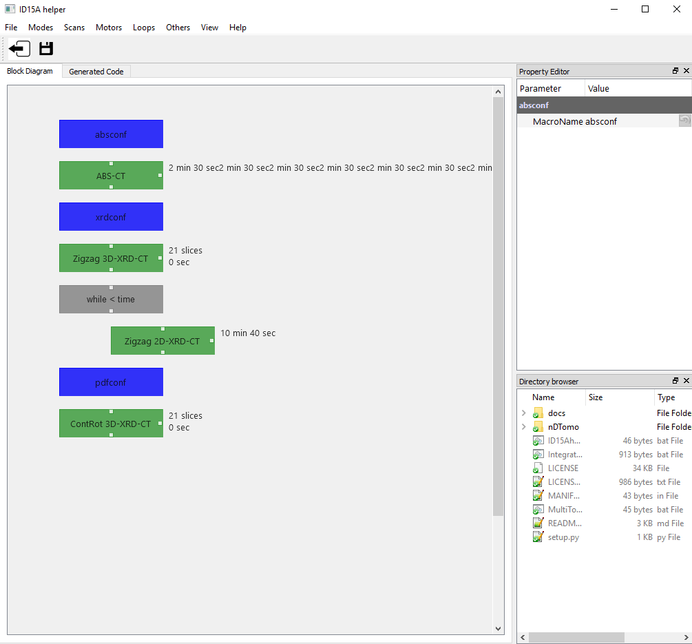
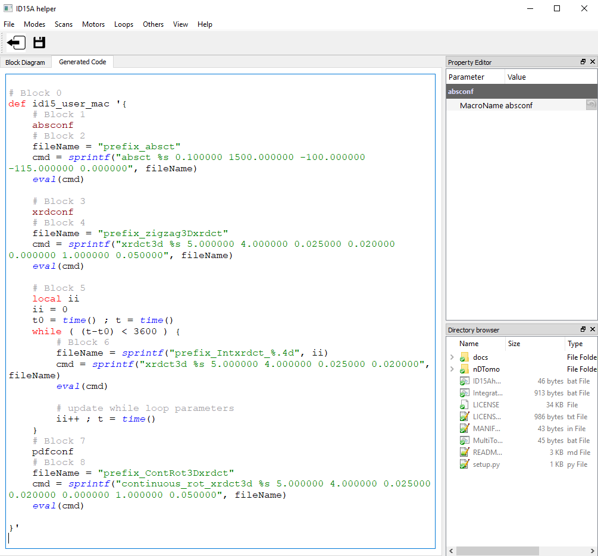

ID15A helper tutorial¶
The role of the GUI is to provide a user friendly way to design a long experiment through the use of interactive blocks. The blocks belong into five major categories:
- Modes
- Scans
- Motors
- Loops
- Others
An example is provided in the following image:
The ID15A helper GUI automatically generates the spec code as shown in the following image:
The code can be exported as a .mac file in order to be compiled and excecuted at the beamline PC. It is also possible to export the exprimental protocol as a .blox file which contains the various blocks.
Modes¶
The available modes are: ABS Mode, XRD Mode and PDF mode.
ABS Mode corresponds to detector configuration for X-ray transmission measurements (imaging camera).
XRD Mode corresponds to detector configuration for X-ray diffraction measurements (e.g. Pilatus detector).
PDF Mode corresponds to detector configuration for X-ray Pair distribution function measurements (e.g. Pilatus detector).
In order to avoid any damage of the equipment (e.g. optics, collision of detectors), the spec (.mac) scripts for these modes are generated only by the beamline personnel.
Scans¶
For all types of scans, the user can define the acquisition time (in s), scan range (in mm), step size (in mm) and sample size (in mm). Currently the following type of scans are available:
- point XRD: single point measurement. There is an option for continuous spinning of the sample during the acquisition
- hor XRD linescan: horizontal line scan
- ver XRD linescan: vertical linescan
- XRD Map: Perform a grid map by performing successive horizontal linescans at different vertical positions
- single XRD-CT: Zigzag XRD-CT scan at one position (i.e. one cross section)
- 3D-XRD-CT: Zigzag XRD-CT scans at different positions (i.e. 3D volume)
- Fast XRD-CT: Continuous rotation-translation XRD-CT scan at one position (i.e. one cross section)
- Fast 3D-XRD-CT: Continuous rotation-translation XRD-CT scan at different positions (i.e. 3D volume)
- Interaced XRD-CT: Interlaced XRD-CT scan consisting of four subsets
- ABS-CT: Full-field X-ray transmission CT (micro-CT)
Motors¶
Allows for absolute and relative movement of the following motors: rotation (aerox), horizontal translation (aeroy) and vertical translation (hrz)
Loops¶
For and while loops are essential in order to design and perform an in situ, dynamic experiment. There are various types of loop blocks:
- A For-loop block where a counter is increased by one in each iteration
- A While-time-loop block where the counter is in minutes
- A While-temperature-loop which can be used for either temperature ramp or cooling
- The Positional Series block allows for successive movement of a motor followed by a scan
Others¶
Some extra commands that include the following:
- Single Eurotherm: Allows for the user to set the temperature for the euro0 and euro1 motors (typically heating system)
- Sleep: A sleep command, time in s
- Wait for user: The protocol will not proceed to the next step unless the user intervenes